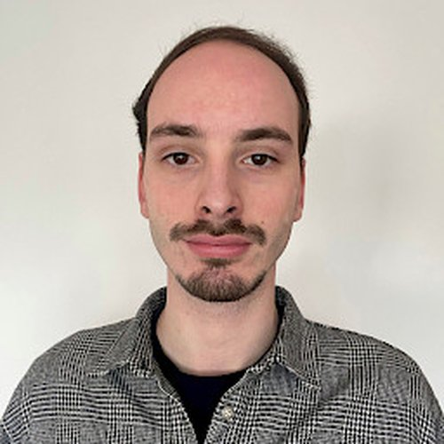
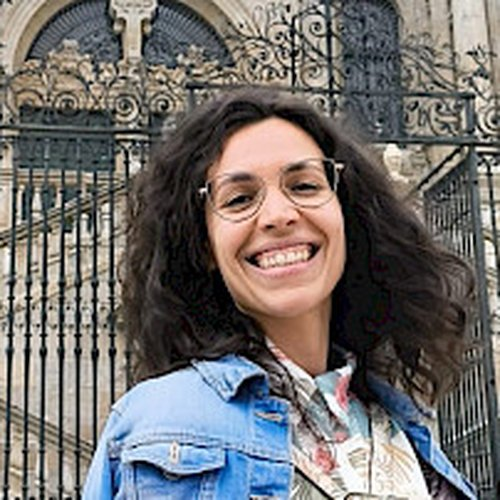
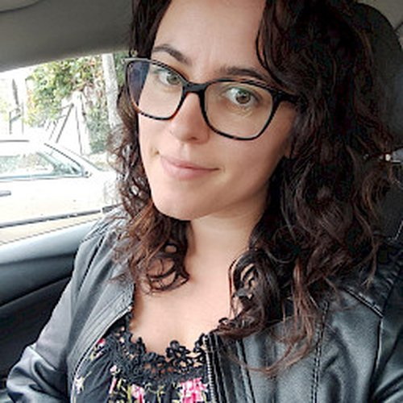
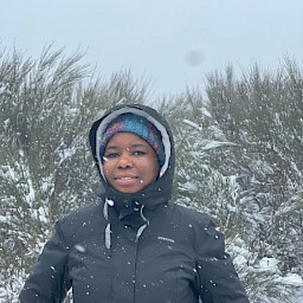
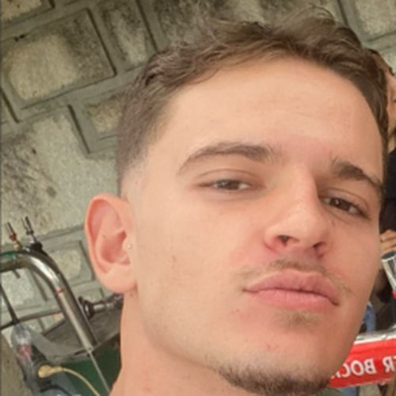

Team
Meet the researchers, students, and staff of the EnGeL Research Group at the Centre for Functional Ecology, University of Coimbra.

Luis Cunha
Dr. Luís Cunha is an Assistant Researcher at the Centre for Functional Ecology (CFE), University of Coimbra, where he co-leads the "Soil Health" research line and the "Sustainable Agriculture, Forestry and Fisheries" thematic line at the TERRA Associate Laboratory. He holds a PhD in Cellular and Molecular Biology from the University of Azores, an MSc in Shellfish Biology from Bangor University, and a Bachelor's in Biology. His research focuses on soil biodiversity, molecular ecology, and ecotoxicology, particularly utilizing NGS-based genomic and transcriptomic approaches to study evolutionary ecology, phylogenetics, and population genetics of metazoans. Dr. Cunha is the joint-Director of the "Terra Preta de Índio" international network and has secured over €1.6M in research funding. He has extensive fieldwork experience leading expeditions in the Amazon rainforest and South African grasslands. With an H-index of 15, he has published widely in high-impact journals like Global Change Biology and Scientific Reports, and has supervised numerous post-doctoral, PhD, and MSc researchers.


Luísa Fraga
Luísa Fraga Dornellas Cysneiros is an early-career researcher and Técnico Superior at the University of Coimbra, specializing in molecular and environmental ecology. She holds a Bachelor's degree in Biology and postgraduate certificates in Applied Ecology and Computational Biology. Her expertise spans DNA-based biodiversity assessment, environmental genomics, and ecological data analysis, with strong proficiency in wet-lab workflows, bioinformatics, and fieldwork across tropical and Mediterranean ecosystems. Luísa has actively contributed to several major research projects, including GRASS4FUN, SYBERAC, and BENCHMARKS. Her research, which focuses on integrating morphological and molecular approaches to evaluate soil biodiversity, has been published in peer-reviewed journals like Ecology and Evolution. She was recognized as a "New Scientific Talent" in environmental sustainability by the Calouste Gulbenkian Foundation in 2021 and won best poster at the Farm to Fork Congress in 2023. She is also heavily involved in public outreach, regularly presenting soil genetics concepts at events like World Soil Day and European Researchers' Night.

Filipa Reis
Filipa Alexandra de Ferreira Reis is a Senior Technician (Técnico Superior) at the University of Coimbra. She holds a PhD in Biosciences (specializing in Ecology), a Master's in Ecology, and a Bachelor's in Biology, all from the University of Coimbra. Her research focuses on soil biology and ecotoxicology, specifically exploring the role of soil fauna—such as earthworms (Oligochaeta) and springtails (Collembola)—in ecosystem structure, soil health, and litter decomposition under climate change scenarios. Filipa has extensive experience in both field and laboratory studies, and she is increasingly integrating molecular biology tools into her soil biodiversity research. Over her career, she has contributed to several national and international projects, including BENCHMARKS, ECO-SERVE, and Forest for Future. She is an active researcher with publications in leading journals like Applied Soil Ecology, NeoBiota, and the Journal of Applied Ecology, and she regularly participates in science communication and public outreach events.

Nadja den Besten
Dr. Ir. Nadja den Besten is an Assistant Researcher at CFE-UC and the owner of Agua Sabia, a research and consultancy organization focused on quantifying the hydrological impacts of regenerative agriculture. She holds a PhD in Remote Sensing from Delft University of Technology, where her dissertation examined waterlogging in agricultural monitoring from space. Nadja also holds a Master's in Water Management from TU Delft and a Bachelor's in Earth Sciences and Economics from VU Amsterdam. With extensive expertise in advanced remote sensing and hydrology, she previously served as a Senior Scientist at Planet, contributing to global biomass monitoring products, and as a Remote Sensing Scientist at VanderSat, focusing on irrigation efficiency. Her professional background also includes working as a country representative and hydrologist in Mozambique, implementing low-cost flying sensors to advise smallholders. Nadja is highly proficient in Python and GIS, and has published numerous peer-reviewed papers on satellite remote sensing, crop yield estimation, and socio-hydrology.

Ricardo Leitão
Ricardo Leitão is a PhD student in Biosciences (specializing in Ecology) at the University of Coimbra and a Researcher at the Centre for Functional Ecology (CFE). A multidisciplinary scientist, he is both a Biologist and a Pharmacist, holding Master's degrees in both Ecology and Organic Farming, alongside an Integrated Master's in Pharmaceutical Sciences. His past research spans estuarine ecology and successional agroforestry systems, and he is currently focusing his doctoral research on the soil health and soil microbiome of Mediterranean agroecosystems. Ricardo has extensive experience in ecological research, community ecology, and agroecology, and is proficient in advanced statistics and bioinformatics tools such as R and DNA metabarcoding. He has contributed to key projects like BENCHMARKS and CULTIVAR, and serves as an associate and vice-delegate for Portugal in the European Agroforestry Federation (EURAF). He is also actively involved in teaching agroecology and soil health at the University of Coimbra.

Liliana Almeida
Liliana Almeida is a Science and Technology Manager at the University of Coimbra, specializing in ecology, science communication, and project administration. She holds both a Master's degree in Ecology and a Bachelor's in Biology from the University of Coimbra, with academic research focused on behavioral ecology and ornithology. Liliana has extensive experience in managing scientific projects, organizing international workshops, and leading public outreach events, particularly for World Soil Day and environmental risk assessment courses. Notably, she has served as the Stakeholder Learning Platform moderator for the European H2020 EcoStack project and collaborated on the Poll-Ole-GI SUDOE project, for which she co-authored policy and technical guides on pollinator protection. Highly skilled in science communication, data management, and collaborative research tools, Liliana plays a vital administrative and supportive role within the EnGeL lab and the wider Centre for Functional Ecology (CFE).

Sandra Simões
Sandra Cristina Sousa Simões is a PhD student in Biosciences (specializing in Ecology) at the University of Coimbra, conducting collaborative research with Cardiff University and the Senckenberg Institute on the conservation genetics of the Eurasian otter (Lutra lutra). She holds an MSc in Ecology and a Bachelor's in Biology from the University of Coimbra, with early research focused on otter feeding ecology and behavior. Sandra has extensive international fieldwork experience, having served as a mammal researcher on conservation expeditions to Cambodia and Croatia, and she regularly volunteers with the non-profit Biodiversity Inventory for Conservation (BINCO). Her previous research fellowships have spanned bee ecology and monitoring (B-Team, CFE-UC) and molecular research in the Bolivian Amazon (ENGEL lab). Her current doctoral work combines traditional genetic tools with advanced genomic approaches to understand population structure, genetic diversity, and freshwater ecosystem health.

Clotilde Nhancale
Clotilde Nhancale is a PhD student in Biosciences (specializing in Ecology) at the University of Coimbra and a Researcher at the Centre for Functional Ecology (CFE). She holds an MSc in Conservation Biology and a Bachelor's degree in Forestry Engineering from Zambeze University, Mozambique. Her research primarily focuses on forest and savanna ecology, carbon sequestration, climate change mitigation, and ecosystem monitoring. Clotilde has extensive experience conducting scientific expeditions across southern Africa, including projects in Gorongosa National Park and South Africa, where she assessed vegetation biomass, soil properties, and wildlife-ecosystem interactions. Prior to her current role, she served as a Research Intern at the Agricultural Research Institute of Mozambique (IIAM) and has participated in international training programs spanning dendrochronology, soil fauna systematics, and climate justice. Her work combines forestry science with ecological monitoring to develop sustainable conservation strategies and nature-based solutions.


Catarina Pinho
Dr. Catarina de Jesus Covas Silva Pinho is a Junior Researcher specializing in evolutionary biology, trophic ecology, and conservation genetics. She holds a PhD and an MSc in Biodiversity, Genetics, and Evolution, as well as a Bachelor's degree in Biology, all from the Faculty of Sciences of the University of Porto. Her research primarily focuses on uncovering trophic interactions using DNA metabarcoding to understand the community assembly of insular terrestrial vertebrates and the ecological impacts of invasive species. Dr. Pinho has worked as a Postdoctoral Researcher and Research Assistant at Associação BIOPOLIS/CIBIO-InBIO. She has extensive experience conducting biodiversity surveys and monitoring projects, including herpetological research in Cabo Verde and environmental assessments in Saudi Arabia. She has published over 10 peer-reviewed articles in journals such as Molecular Ecology and Genes, and is actively involved in science communication and academic mentoring.
Andreia Quaresma
Andreia Quaresma is a molecular biologist and researcher at the Mountain Research Center (CIMO), Instituto Politécnico de Bragança. She is currently pursuing a PhD in Biodiversity, Genetics, and Evolution (BIODIV) at the University of Porto, focusing on DNA metabarcoding of pollen mixtures for environmental monitoring. She holds an MSc in Biotechnological Engineering from the Instituto Politécnico de Bragança and an MSc in Molecular Biology and Genetics from the University of Lisbon. Her research expertise spans molecular ecology, bioinformatics, biodiversity conservation, and genetics. Over her career, she has been heavily involved in high-profile national and European projects, including INSIGNIA, INSIGNIA-EU, and FREE-B, which utilize honey bees as environmental biomonitors for pesticide pollution and climate change impacts. Additionally, she has worked extensively on the invasion genetics of the Asian hornet (Vespa velutina) and non-invasive genetic monitoring of the Iberian wolf. She has published multiple peer-reviewed papers in leading journals like Nature Communications and Scientific Data, and has co-supervised academic coursework in forest genetics and molecular markers.